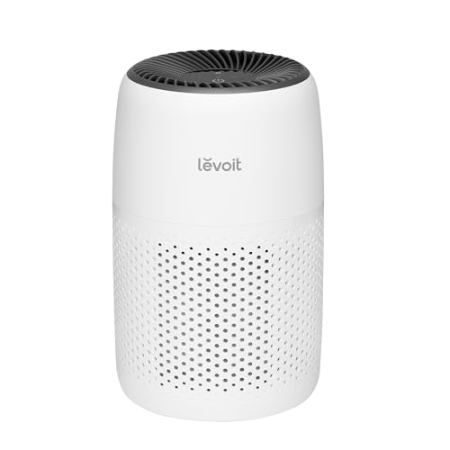
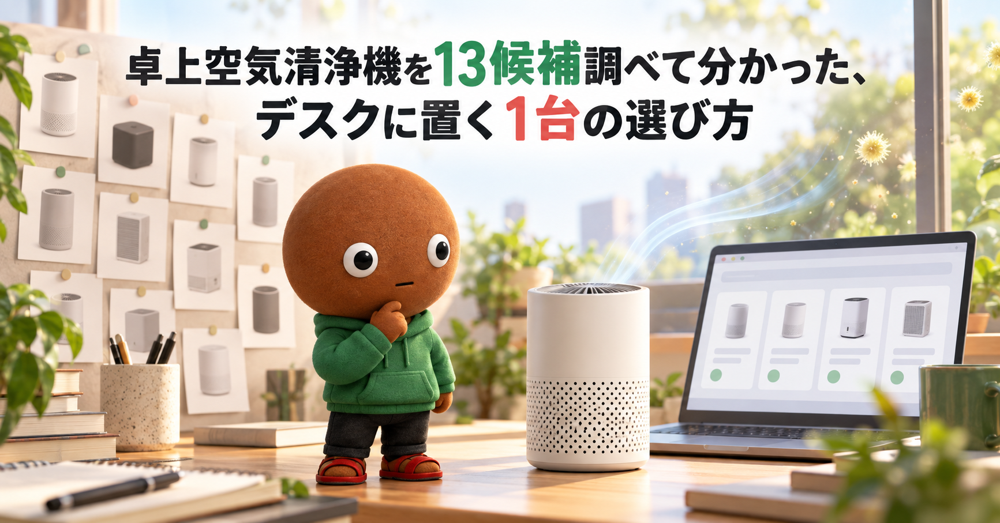
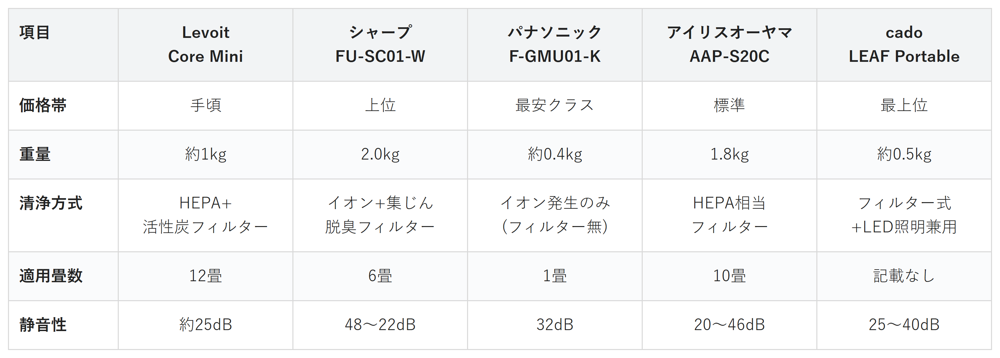

Amazonで見るデスクの周りの空気、タバコやペットの匂い、花粉の季節のムズムズが気になる人へ
そのデスク、
空気まで整えていますか？
卓上空気清浄機13候補を調査。安さ・定番の安心感・省スペース(USB給電)・花粉対策(HEPA)・デザイン性から、選び方の違う5商品を比較しました。
自分に合う卓上空気清浄機を探す
この記事はAmazonアソシエイト・プログラムの参加者として、紹介料を得る場合があります（PR）。仕様は調査時点の情報です。
13候補から、選び方の違う5商品に絞りました。まずは気になる1台へ。向いている人・向いていない人と、低評価レビューもまとめています。
13候補を調査
5商品に厳選
低評価レビューも確認済み
結論から先に言うと：
あなたのデスク事情に合う、1台を。
横にスワイプして、5商品を見比べる
選び方の基準は3つ
調べてわかったのは、基準は3つでした。
1つ目は「清浄方式」。フィルターで物理的にホコリを捕まえるタイプと、イオンで匂いに作用するだけのタイプでは、できることが違います。
2つ目は「設置スペース・電源方式」。コンセント式かUSB給電式かで、デスクの上に置ける場所が変わります。
3つ目は「対応畳数・静音性」。デスク周りだけを整えたいか、部屋全体まで広げたいかで、選ぶ畳数が変わります。
価格帯にはかなり幅がありました。
比較表

価格帯・重量・清浄方式・適用畳数・静音性の比較（価格帯は最安クラス〜最上位の5段階）
Levoit Core Mini
- 手頃
- 重量約1kg
- HEPA+活性炭フィルター
- 適用12畳・静音性約25dB
シャープ FU-SC01-W
- 上位
- 重量2.0kg
- イオン+集じん脱臭フィルター
- 適用6畳・静音性48〜22dB
パナソニック F-GMU01-K
- 最安クラス
- 重量約0.4kg
- イオン発生のみ(フィルター無)
- 適用1畳・静音性32dB
アイリスオーヤマ AAP-S20C
- 標準
- 重量1.8kg
- HEPA相当フィルター
- 適用10畳・静音性20〜46dB
cado LEAF Portable
- 最上位
- 重量約0.5kg
- フィルター式+LED照明兼用
- 静音性25〜40dB
向いてる人
- まずは安く試したい人
- デスクに置ける軽さを重視したい人
向いてない人
- 6畳以上の部屋全体を清浄したい人
選ぶ決め手とにかく安く試したい人は、これを選べば迷いません。
低評価レビューも見ました
今回調べた範囲では、目立った低評価の指摘は見当たりませんでした。
参考：レビューブログを基にした集約
Levoit Core Miniは、
価格を抑えてまず試したい人に
最も向く1台です。
HEPAフィルターが0.1μmの
粒子を97%除去し、活性炭が
匂いも合わせて抑えます。
重さは約1kg、サイズも
コンパクトでデスクに置きやすいです。
向いてる人
- 国内メーカーの実績を重視したい人
- 集じんとイオンの両方を使いたい人
向いてない人
- 静音性を最優先したい人
選ぶ決め手国内メーカーの実績を重視する人は、これを選べば安心です。
低評価レビューも見ました
今回調べた範囲では、目立った低評価の指摘は見当たりませんでした。
参考：レビューブログを基にした集約
シャープFU-SC01-Wは、
国内メーカーの安心感を
重視する人に最も向く1台です。
集じん脱臭一体型フィルターと、
プラズマクラスター7000イオンを
組み合わせています。
360°下吸込み方式で、
コンパクトな円柱型デザインです。
向いてる人
- デスクに置くスペースがない人
- USB給電で使いたい人
向いてない人
- 花粉やホコリを物理的に除去したい人
選ぶ決め手デスクの空きスペースが無い人は、まずこれを置いてみてください。
低評価レビューも見ました
今回調べた範囲では、目立った低評価の指摘は見当たりませんでした。HEPAフィルターを持たない点は、本文と比較表の両方で正直に明記しています。
参考：レビューブログを基にした集約
パナソニックF-GMU01-Kは、
デスクに置く場所がない人に
最も向く1台です。
重さ約0.4kg、USBケーブルで
電源をとる、ナノイーX
4.8兆のイオン発生機です。
HEPAフィルターは搭載しておらず、
物理的な集じんではなく
イオンでの脱臭が中心です。
向いてる人
- 花粉やハウスダストを除去したい人
- 10畳まで対応させたい人
向いてない人
- デスクの省スペース性を重視したい人
選ぶ決め手デスク以外の部屋全体まで考えたい人は、これがいちばん外しにくいです。
低評価レビューも見ました
今回調べた範囲では、目立った低評価の指摘は見当たりませんでした。
参考：レビューブログを基にした集約
アイリスオーヤマAAP-S20Cは、
花粉やハウスダストを
しっかり除去したい人に最も向く1台です。
HEPA相当のフィルターで、
5商品でいちばん広い
10畳まで対応します。
弱モードなら20dBまで下がり、
就寝時にも使いやすい静音性です。
向いてる人
- インテリアに馴染む見た目を探す人
- LEDライトも兼ねたい人
向いてない人
- 価格をとにかく抑えたい人
選ぶ決め手デスクの見た目も妥協したくない人は、これで決まりです。
低評価レビューも見ました
今回調べた範囲では、目立った低評価の指摘は見当たりませんでした。
参考：レビューブログを基にした集約
cadoのLEAF Portableは、
見た目にもこだわりたい人に
最も向く1台です。
直径66×高さ180mmの
円柱デザインで、LEDライトを
3段階で調光できます。
USB Type-C給電で、
車のDCアダプターにも対応しています。
13候補をどう絞った？ 調査の経緯を見る
デスクの周りの空気、なんとなく気になることはありませんか。タバコやペットの匂い、花粉の季節のムズムズ。卓上空気清浄機は種類が多く、イオン式かフィルター式かも分かりにくいです。
なので今回、私がスペックを調べ比較しました。各商品ごとに、向いてる人・向いてない人も調べているので、自分に合った卓上空気清浄機を探してみてください。
13候補から5つに絞り込みました
卓上空気清浄機は、価格.comやマイベストのランキングだけでも数十件が並ぶジャンルです。今回は主要候補13件を調べ、価格帯・清浄方式・電源方式が重複しないように5商品まで絞りました。
調査したのはLevoit2機種・シャープ3機種・パナソニック1機種・Airdog1機種・ベノア1機種・TOPLAND1機種・ドウシシャ1機種・サンコー1機種・cado1機種・アイリスオーヤマ1機種という13候補です。
Levoit Core 300は、採用したCore Miniと同じHEPA・活性炭フィルターです。重さが3.5kgとCore Miniの4倍近くあり、卓上としての携帯性で明確に劣るため見送りました。
Airdogのx1Dは、フィルター交換が不要という独自の強みがあります。価格は66,000円からで、採用した5商品の最高額cado（21,800円）の3倍以上です。気軽に試す用途からは外れると判断し見送りました。
シャープPurefit FU-U40-Wは、18畳対応で重さ3.9kgです。デスク上のパーソナル用途にはサイズが大きすぎるため見送りました。
シャープIG-MX15-Bは、重さ295gと採用したF-GMU01-Kの約400gよりわずかに軽いです。ただし清浄方式・価格帯とも重複するため見送りました。
ベノアPLAZION DAS-15Rは、価格.comの満足度は4.48と良好でしたが、重量や清浄方式の一次情報を確認できず見送りました。
TOPLANDのM7070は、今回の中で最安の価格帯でした。ただし適用畳数が0.6畳と極端に狭く、無名ブランドで一次情報も確認できなかったため見送りました。
ドウシシャAPA-081WHとサンコーPYZONE RGBは、いずれも価格や重量の一次情報を公式サイトで確認できなかったため見送りました。
低評価の3商品も見ました
上の13候補とは別に、サクラチェッカーが要注意と判定した商品を3つ調べました。個別レビュー本文の真偽までは検証できないため、機械的に検出された事実だけを正直に書きます。
MILINの空気清浄機は、レビュー53件でサクラ度約3.3でした。公式サイトが無く、推定中国拠点との指摘がありました。
UNbeatenの空気清浄機は、レビュー17件と、このカテゴリの平均432件と比べて極端に少ないです。マーケットプレイス商品で、公式サイトもありませんでした。
Kungixの空気清浄機は、レビュー75件でしたが、評価件数不足で分析不可と判定されました。
今回私が採用したLevoit・シャープ・パナソニック・アイリスオーヤマ・cadoは、いずれも公式サイトを持つメーカーでした。
調べてみて驚いたこと
13候補以上を比較しました。一番驚いたのは、パナソニックF-GMU01-KやシャープIG-MX15-Bです。これらは「空気清浄機」と呼ばれる商品の中にも、HEPAフィルターを持たずイオンだけで勝負するタイプがあったことです。
商品名だけでなく、「物理的に除去するのか、イオンで作用するだけなのか」を確認する必要があります。確認しないと、期待した効果と違うことになると実感しました。
もう1つの発見は、サクラチェッカーで要注意判定を受けた3商品が、いずれも公式サイトを持っていなかったことです。
迷ったらこれ
ここまで読んでも迷ったら、価格を抑えつつHEPAで実力もあるLevoit Core Miniが、いちばん外しにくい1台です。
Amazonで見る→よくある質問
Q. 卓上空気清浄機は何を基準に選べばいい？
A. まず「清浄方式」でフィルター式かイオン式かを確認し、次に「設置スペース・電源方式」「対応畳数・静音性」が自分の使い方に合うかを見るのがおすすめです。
Q. イオン式とフィルター式、何が違う？
A. パナソニックF-GMU01-Kはフィルターを持たずイオンで作用するタイプで、他4商品はHEPAやHEPA相当のフィルターで物理的に捕まえるタイプです。
Q. USB給電でも部屋全体をきれいにできる？
A. 今回のパナソニックF-GMU01-Kは適用畳数1畳の設計で、あくまでデスク周りのパーソナル用途向けです。部屋全体まで考えるならアイリスオーヤマAAP-S20C（10畳）のような据え置きタイプが向いています。
Q. フィルターの交換は必要？
A. 今回の5商品では、Levoit・シャープ・アイリスオーヤマ・cadoがフィルター交換の必要なタイプで、パナソニックはフィルターを持たないため交換不要です。商品ごとの交換目安は公式サイトで確認してください。
Q. 安いものと高いもの、何が違う？
A. 価格帯の違いにつながっていたのは、対応畳数の広さとLEDライトのような機能の有無でした。
こんな記事も書いてます
ミートボーの調査部屋で他の記事も見る（全本）


出典
- 価格.com「卓上 空気清浄機」検索結果：search.kakaku.com
- マイベスト 卓上空気清浄機ランキング：my-best.com
- Levoit（VeSync Japan）公式 Core Mini商品ページ：vesync.jp
- シャープ公式 FU-SC01商品ページ：jp.sharp
- パナソニック公式 F-GMU01仕様ページ：panasonic.jp
- cado公式 LEAF Portable(MP-C30)商品ページ：cado.com
- アイリスオーヤマ公式 AAP-S20C商品ページ：irisplaza.co.jp
- マイナビおすすめナビ 卓上空気清浄機17選：osusume.mynavi.jp
- Sakidori 卓上空気清浄機16選：sakidori.co
- サクラチェッカー MILIN：sakura-checker.jp
- サクラチェッカー UNbeaten：sakura-checker.jp
- サクラチェッカー Kungix：sakura-checker.jp
- Amazon.co.jp Levoit Core Mini：amazon.co.jp
- Amazon.co.jp シャープFU-SC01-W：amazon.co.jp
- Amazon.co.jp パナソニックF-GMU01-K：amazon.co.jp
- Amazon.co.jp アイリスオーヤマAAP-S20C：amazon.co.jp
- Amazon.co.jp cado LEAF Portable：amazon.co.jp